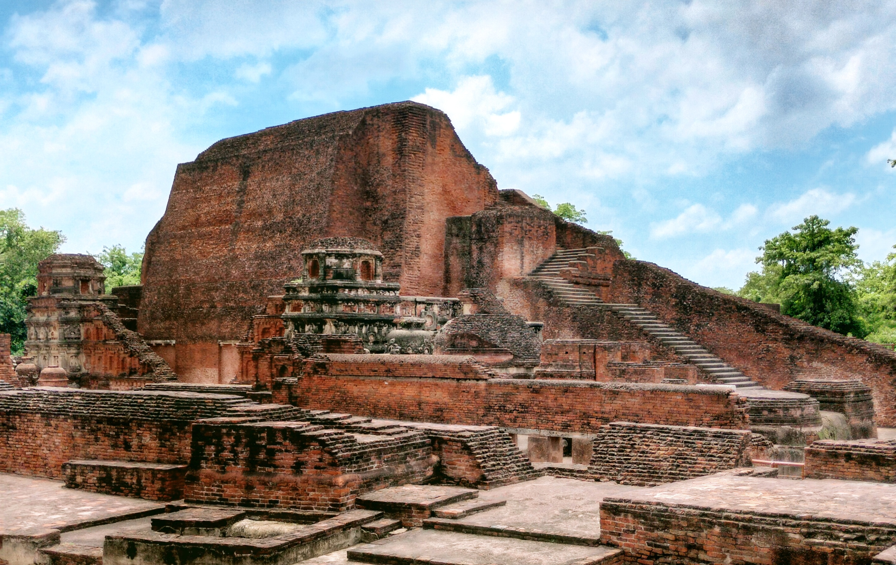

The name Nalanda is traditionally explained through local legend as deriving from "Na-alam-da", meaning "insatiable in giving", a reference to the site's association with a nearby naga (serpent deity) pool and with Lord Buddha's own past-life generosity according to accounts recorded by Chinese pilgrims. Located roughly 95 kilometres southeast of Patna near present-day Rajgir in Bihar, the site had religious associations reaching back earlier still, with tradition holding that the Buddha himself visited and taught in the area, and Mahavira, the founder of Jainism, is also said to have spent time there, giving the ground a layered sanctity well before any formal institution was built upon it.
Nalanda Mahavihara holds a distinct place in global history as one of the earliest residential, university-style centres of organised learning anywhere in the world, combining the functions of a Buddhist monastery with those of a full scholastic institution offering instruction in theology, logic, grammar, medicine, astronomy, and mathematics. Operating for roughly seven centuries from the 5th to the 13th century CE, it drew students and visiting scholars from across Asia, including China, Korea, Tibet, and Central Asia, and is widely regarded by historians as a forerunner of the modern residential university. In recognition of this significance, the Archaeological Site of Nalanda Mahavihara was inscribed as a UNESCO World Heritage Site in 2016.
Archaeological and textual evidence indicates the monastery's formal establishment under the Gupta emperor Kumaragupta I around 427 CE, with subsequent rulers of the Gupta and, later, the Pala dynasties adding temples, monastic cells, and endowments over the following centuries; the 7th-century emperor Harshavardhana of Kanauj is also recorded as a patron. Excavations carried out by the Archaeological Survey of India, principally between 1915 and 1937 and again from 1974 to 1982, exposed a planned complex of eleven monasteries (viharas) and fourteen temples built largely of fired brick, laid out along a north-south axis and spread across a protected area of about 23 hectares with a surrounding buffer zone of nearly 58 hectares.
Among the most visited remains is the great stepped stupa known as Temple Site No. 3, rebuilt in successive phases and surrounded by smaller votive stupas, while the monastic cells preserve the cellular residential plan described in detail by the Chinese pilgrim-scholars Xuanzang and Yijing, who each spent years studying at Nalanda in the 7th century and left accounts estimating resident populations of several thousand monks and teachers at the institution's height. The site's decline followed its sacking around 1200 CE by the forces of Bakhtiyar Khilji, after which the halls and library complex, said to have held an immense collection of manuscripts, were destroyed and the site was gradually abandoned and buried until its rediscovery and systematic excavation began in the early 20th century.
The excavated remains and an adjoining archaeological museum housing recovered sculptures, seals, and inscriptions are maintained today by the Archaeological Survey of India, which has periodically undertaken conservation work on the exposed brick structures to protect them from monsoon damage and visitor wear. A short distance away, a new Nalanda University was established in 2014 as an international postgraduate institution under an Act of the Indian Parliament, conceived explicitly as a modern revival of the ancient seat of learning's cross-border scholarly tradition. Together, the brick ruins and the new university now form a linked pair of sites, one preserved as an archaeological monument under state protection and the other functioning as an active centre of graduate study, keeping Nalanda relevant to both historians and present-day students of Asian intellectual history.
| Date of Introduction | September 19, 2024 |
|---|---|
| Address | Sub Postmaster, |
| Nalanda SO, | |
| Nalanda (dt.), Bihar - 801303. |